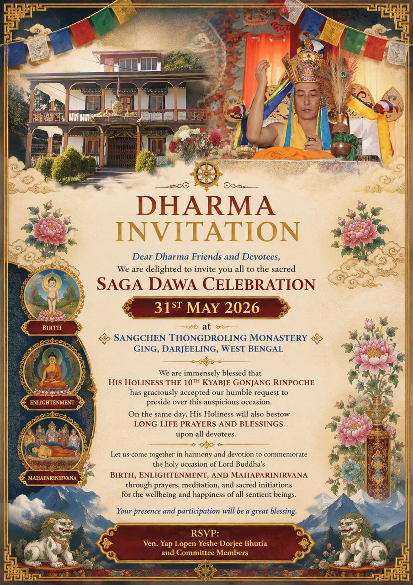

༄༅།། གསང་ཆེན་མཐོང་གྲོལ་གླིང་དགོན་པ།།
Sangchen Thongdrol Ling
A sacred place of liberation through seeing (Thongdrol)
A historic Buddhist monastery situated in Ging, Darjeeling.
A Nyingma monastery affiliated with Pemayangtse, with recorded history dating to the early nineteenth century.
Upcoming Event
Saga Dawa Celebration
31st May 2026
Dear Dharma friends and devotees, you are warmly invited to the sacred Saga Dawa Celebration at Sangchen Thongdroling Monastery, Ging, Darjeeling, West Bengal.
His Holiness the 10th Kyabje Gonjang Rinpoche has graciously accepted the humble request to preside over this auspicious occasion and will bestow long life prayers and blessings upon all devotees.
RSVP: Ven. Yap Lopen Yeshey Dorjee Bhutia and Committee Members

This website serves as an ongoing archival effort—documenting the history, traditions, and living practice of Sangchen Thongdrol Ling.